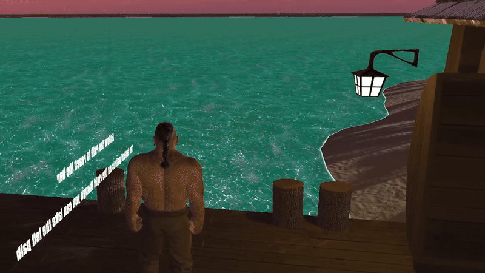

Pirate Island Environment
BackOne of my Major University Projects in year 1. This was the creation of a 3D thematic Environment using Unity.
The theme of the project was Pirates of any kind.
I went with a classic fantasy Pirate theme of a Pirate Island. There were a range of exact specifications that the projected needed to meet. These were the following:
- The Environment must be Pirate themed
- Must contain 3 custom made assets
- Must include a range of Interactable elements
- Have a general linear path/story from beginning to end
- Made in Unity
This project allowed me to express my creative side, allowing me to add elements that I felt fit the theme. Some of my favourite additions were the groynes along the beach to give the idea of anti-erosion methods, the custom bar added in the centre of the island where I used an enlarged version of my custom bottle as a bar sign, and the ship that used an animation to show it constantly circling the island.
There are some things I would improve, such as changing the players animations so the movement appears more fluid and that I would have liked to add more natural features scattered around the island to make it feel more alive. But overall, I had a lot of fun with this project.
